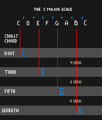
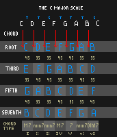

GROWL
I'd rather be playing guitar
FR
 EN
EN
Last article we covered triads, chords composed of three notes. Chords don't end there. In the same way that we described triads as two stacked third intervals, seventh chords can be thought of as three stacked thirds. The loosest definition for a seventh chord then is a stack of the root, third, fifth and seventh from a given root tone.
Just as with triads, we can find the seventh chords in a key by taking each note in a scale and taking the third and fifth above it. This time we just go a bit further and add the seventh too. In C major that gives us C-E-G-B. Continuing on throught the C major scale we get D-F-A-C etc.
Similarly to triads, the third in the chord still dictates whether the chord is major, minor or diminished. When naming sevenths chords we keep that information. Below I have determined all the seventh chords in C major. We end up with four new types of chords, once again determined by the semitone spaces between the notes of our major scale.
We can think of the seventh chords in three groups stemming from their triad versions. When we add a major third on top of a major triad, we get a "major 7" chord (C-E-G-B); these occur for chords built on the first and fourth notes of the major scale. You may see it written as MAJ7,M7 or with a triangle symbol (CMAJ7, CM7 etc). When we add a minor third to a major triad we get the HUGELY important "dominant 7" chord (G-B-D-F). This only occurs on note 5 of the major scale. You will see that notated in music as just "7" eg(G7).
Adding a minor third on top of a minor triad creates a "minor 7th" chord, for example D-F-A-C. These occur for chords built on the 2nd, 3rd and 6th notes of the major scale. It is often notated as min7 or m7.
The final type of seventh chord is built on the diminished triad which is itself two stacked minor thirds (B-D-F in the case of C major). Using the notes of the major scale, the next third to add is major. This creates what is known as a "half diminished 7th" chord e.g.(B-D-F-A). The reason it is called "half diminished" is that composers often modify the chord by adding a minor third instead of the major third that you would get from the key (Ab rather than A). This creates instead a "fully diminished 7th", often called just a "diminished 7th". Notation is a bit weird. Half diminished is either written as "min7b5" or a superscript circle with a line though it. Diminshed chords are represented as "dim7" or as a superscript circle.
Modification to form a new chord (as in fully diminished 7) is part of a much broader subject, "chromatic alteration". We will get to that, but suffice it to say that there are two types of diminished seventh chord and the "fully diminished" is both more commonly encountered AND more useful.
There's a lot to cover here in terms of practice. Five types of chord, each yielding a further three inversions. That's a lot of potential arpeggios and combinations. I found that they key to getting to know the seventh chords was to think about their mood. This isn't my invention but rather a common musician's approach. I'd encourage any reader to find their own identity for each seventh chord, to help navigate, recognise and apply them. Loosely I think of the major 7 as nostalgic, the minor 7 as enigmatic and the dominant as quirky, mischievous. What do they make you think and feel?
OTHER 4 NOTE CHORDS
There are other types of four note chords eg: 6 chords. They are going to get their own attention. You might also see other chords, especially on guitar, composed of 4 different notes. This is often a result of taking extended chords, having 4 or more notes and then dropping some of them. This can be done without harming the effect or "function" of the chord. This too will be the subject of a later article here on Growl.